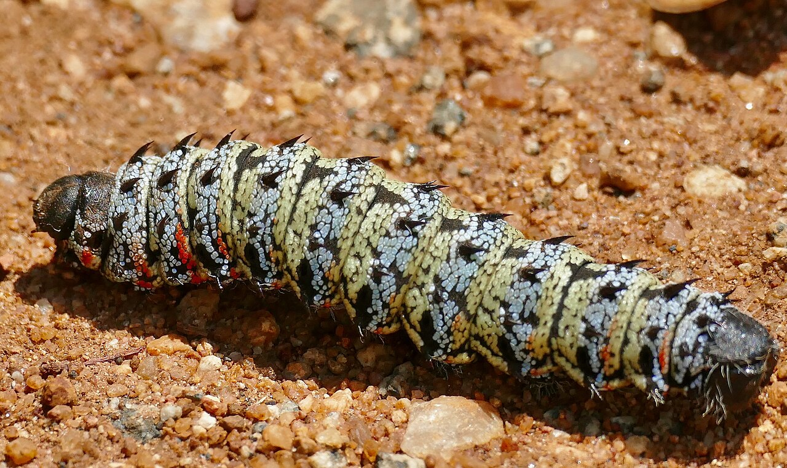

SFM Value Chain · Wild harvest · women-led

Mopane Worm & Wild Harvests
Seasonal protein and cash from the standing woodland — gathered largely by women

The mopane worm (Gonimbrasia belina) — harvested, dried and traded as a protein staple across the region. Photo: Bernard Dupont, CC BY-SA 2.0, via Wikimedia Commons
What it is
The mopane worm — the caterpillar of an emperor moth — together with wild mushrooms and medicinal trees, is one of the woodland’s most valuable harvests. It is a seasonal protein and cash crop, gathered and traded largely by women, and managed within community limits to keep it sustainable (Nemadodzi et al., 2023).
How it works
- Harvest mopane worms in season from mopane woodland, then degut, dry and store them
- Keep the harvest within community rules so breeding stock and host trees are not exhausted
- Gather complementary wild products — Termitomyces and Cantharellus mushrooms, honey, medicinal roots
- Add value through drying, grading and packaging for regional protein markets
- Recognise and strengthen the women who lead the harvest and trade (gender-responsive value chains)
Key facts
- Product
- Mopane worm (Gonimbrasia belina); mushrooms; medicine
- Host tree
- Mopane (Colophospermum mopane)
- Harvested
- Millions of kilograms a year, region-wide
- Who
- Gathered & traded largely by women
- Co-benefits
- Seasonal protein · cash · incentive to keep mopane standing
Why it matters
The mopane worm is more than wildlife — it is food and a livelihood, and one of the woodland’s most valuable products (Nemadodzi et al., 2023). Harvested within limits, it makes intact mopane directly worth protecting, and it puts income in women’s hands.
WOCAT classification
- Measures
- MManagement
- WOCAT group
- Non-wood forest product harvest management
- Degradation addressed
- Biological degradationOver-harvesting risk
Classified per the WOCAT SLM-Technologies classification.
✦Source and links
Sources (APA, 7th ed.).
- Nemadodzi, L. E., Managa, G. M., & Prinsloo, G. (2023). The use of Gonimbrasia belina and Cirina forda caterpillars as food sources and income generators in Africa. Foods, 12(11), 2184. https://doi.org/10.3390/foods12112184
- Dewees, P. A., Campbell, B. M., Katerere, Y., Sitoe, A., Cunningham, A. B., Angelsen, A., & Wunder, S. (2010). Managing the miombo woodlands of southern Africa: Policies, incentives and options for the rural poor. Journal of Natural Resources Policy Research, 2(1), 57–73. https://doi.org/10.1080/19390450903350846